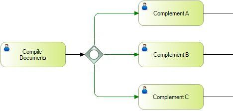

ScopeObjects: Business Process Diagram SymbolPurposeThis type of Gateway supports situations in which more than one decision may be possible. When a signal reaches this Gateway, a complete evaluation is performed including all the conditions considered in the control. Each condition evaluated as true will result in a signal towards that exit flow. There will always have to be at least one true condition. DescriptionIn divergence, the behavior is similar to the Exclusive Gateway in the sense that it allows for the creation of multiple alternative pathways based on conditions imposed on those pathways. The difference lies in that more than one path can be chosen, that is, all those whose corresponding conditions evaluate to true. In this case, the use of "default" paths is recommended in order to prevent the process from getting stuck in any situation. Convergence works similarly to a Parallel Gateway convergence in the sense that it synchronizes the paths arriving to the Gateway. Unlike Parallel, it only synchronizes those paths that actually reach the Gateway, which are not necessarily all the paths that reach the Gateway in the diagram; this could be specific to each process instance. Properties
ExamplesIn this example of divergence, the Compile Documents process moves its flow to an Inclusive Gateway that branches in three possible parallel conditions. They are evaluated if they are true. In the instance example, if Complement A and Complement B are true, the flow keeps moving forward through their corresponding exit paths. If only Complement C were true, the flow would move only from that condition.  See AlsoHowTo: Defining conditions or events that determine the path(s) to follow in a BPD Event Gateway
|
| Backlinks | |||
| Category:BPD Gateways | Condition Procedure | ||
| Event Gateway | Exclusive Gateway | Toc:GeneXus BPM Suite | Parallel Gateway |